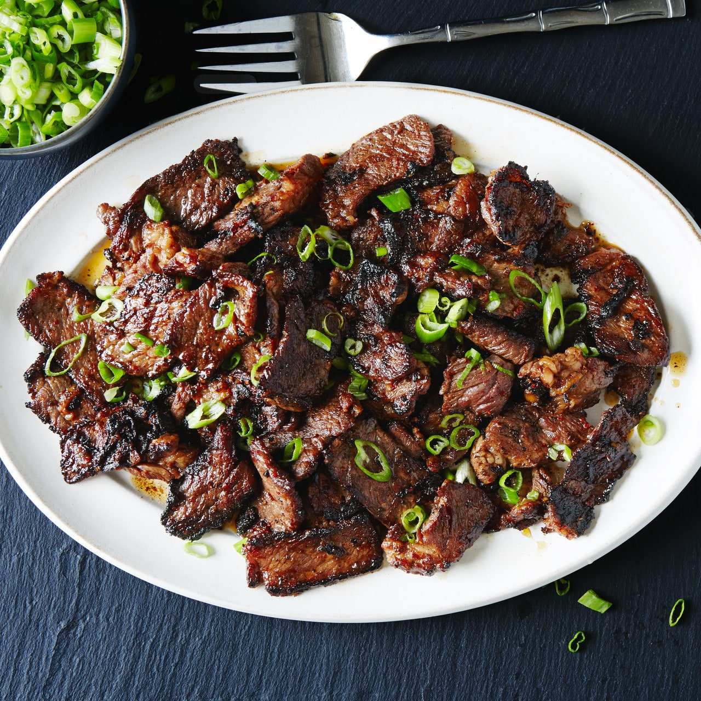

Preston's Culturally Appropriated Bulgogi!

The Background
What actually is bulgogi? I have no idea. But I won't let me own lack of knowledge prevent me from whitemansplaining this dish to improve my search engine optimization.
It's just stir-fried beef with some sauce right?
The Ingredients
- Beef
- Bulgogi sauce
- Olive oil
The Instructions
- Add olive oil to a pan on high heat
- Add a bunch of beef
- Add some sauce to the pan
- Stir it around until you think it's probably done.
- It's beef. What are you going to do, undercook it? Lol.
- Add it to a staging bowl.
- Add more beef and sauce to the pan.
- Repeat until you're out of beef and sauce.
- Eat it
Return to the recipe page.